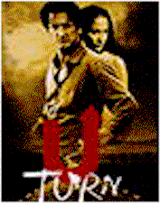
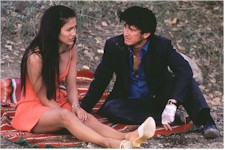
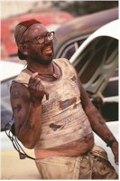
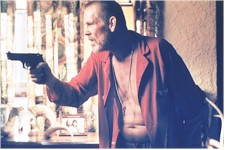

Contents | Features | Reviews | Books | Archives | Store |
 |
|
| Movie Credits | Buy It! |
U-Turn
Review by Carrie
Gorringe
Posted 3 October 1997
|  | Directed by Oliver Stone Starring Sean Penn, Jennifer Lopez, Screenplay by John Ridley, |
Con man Bobby Cooper (Penn) is heading for Las Vegas in the hopes of clearing a rather large gambling debt owed to a rather vicious individual whose idea of giving people a break on their loans has to do with the liberal application of a sledgehammer to the deadbeat’s shins. His good luck evaporates just outside of a hellhole ironically named Superior, Arizona, when a rad hose decides to give out. This bad break puts him at the mercy of several local grotesqueries, least of which is the local "mechanic," Darrell (Thornton), who continually raises the ante on getting Cooper’s car released from automotive custody. Next in line are the McKennas. Lured by the beauty of sultry Grace (Lopez), Cooper soon finds himself confronted by her beast of a husband, Jake (Nolte), the closest thing this geographic exercise in hell has to a powerhouse. Cooper discovers that both participants in the McKenna marriage would be more than happy to eliminate the high financial cost of divorce by eliminating each other, and Cooper becomes the device of choice for both. While he ponders which offer to take, he is periodically assaulted by the vacuousness flirting of the local dimwitted floozy (Danes) and her hysterically jealous boyfriend (Phoenix). The local sheriff (Boothe) also has this newcomer under surveillance. Cooper might have left this madhouse much sooner, if his money hadn’t been, well, liquidated in a robbery at Superior’s only general store. Now, even the loanshark is after him. Desperate, exhausted, broke and under Grace’s spell, the weak-willed Cooper has to make a decision: to help Grace or to help Jake?
Many comparisons have been made between U-Turn and its presumed predecessors in film noir; one critic referred to the film as Touch of Evil mixed with Duel in the Sun. Stone himself prefers to think of U-Turn as more of a western than a noir piece. A more immediate comparison might be made between U-Turn and John Dahl's 1993 neo-noir, Red Rock West. However, in terms of narrative structure, U-Turn’s closest cinematic "relative" really has to be the Edgar G. Ulmer noir classic from 1946, Detour. Both films share the common dilemma of a spineless antihero caught in a relentlessly downward spiral, a position exacerbated by allowing a sinister female into his life. Every more he takes to extricate himself just causes the level of misery to accelerate. Not surprisingly, this type of noir can be extremely difficult for the audience to tolerate for very long, precisely because the grim route taken by the antihero is so lacking in self-awareness that, under the force of an overwhelmingly negative pressure-cooker atmosphere, disgust mixed with despair soon sets in – a fatal combination of forces with which to hold an audience in thrall. However, because of studio and budgetary considerations (the film was shot over four days), Ulmer was obliged to keep the torture down to sixty-nine minutes of running time; these factors saved Detour from becoming a B-movie exercise in nihilistic self-indulgence and rendered it a minor masterpiece in retrospect. Just as Detour began to tax the nerves beyond endurance, the ending, with its macabre twist, intervened to save everyone from nervous enervation. In this case, it was better to end the downbeat on the upbeat.
Unfortunately, this is not the tack taken by Stone and Ridley. The problem doesn’t stem from the traditional sources of too much money and too much time for shooting (Stone, to his credit, shot U-Turn for twenty million dollars – a veritable fire-sale price in contemporary Hollywood – and in forty-two days, almost a third less time than is normal for him). Had the two also employed economy in crafting the plot structure, everything should have worked out according to plan. Instead, they allow events in Superior, Arizona to drag out endlessly for at least half an hour too long. There aren’t enough unique plot variations suggested by the environment to effectively nurture this delay (cities are a better setting for this type of film, suggesting, as they do, a myriad of possibilities denied to your average one-horse hamlet), so Stone and Ridley are reduced to piling devastation upon devastation on Cooper’s back as a form of filler, and the efforts seem so contrived that they simply seem ludicrous. By the time the film gets itself back on the road, to what otherwise would have been (should have been?) a stunning finale, the film’s momentum has been inexorably depleted, as the audience’s interest has been strung past the breaking point. Forget the concept of "compassion fatigue;" the audience with which I saw U-Turn was suffering from something far more severe: "identification fatigue;" the audience had nothing left to give to the film, and simply wanted the conclusion to emerge as quickly as possible. Not even generous amounts of over-the-top humor and immaculate, striking visuals could salvage it.
The larceny committed upon U-Turn by its own makers, which can only be described as vampiric, is inexcusable because there are a number of grand performances in this ensemble cast. Obviously, Penn, with his multilayered portrayal of the freedom-craving Cooper confirms his position as one of the finest actors of his generation, but Phoenix, remembered best as the teenage killer in To Die For, carves out a new dimension for himself as TNT, the teenage nut case. Nolte is extremely impressive as the evil Jake, and Thornton is underhandedly brilliant as the malevolently hilarious mechanic. Unfortunately, U-Turn takes all of their talents into a dead end.
Contents | Features | Reviews | Books | Archives | Store
Copyright © 1999 by Nitrate Productions, Inc. All Rights Reserved.